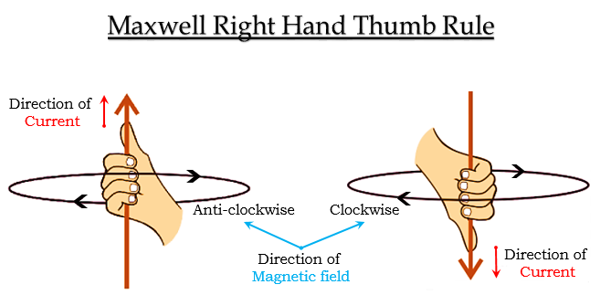
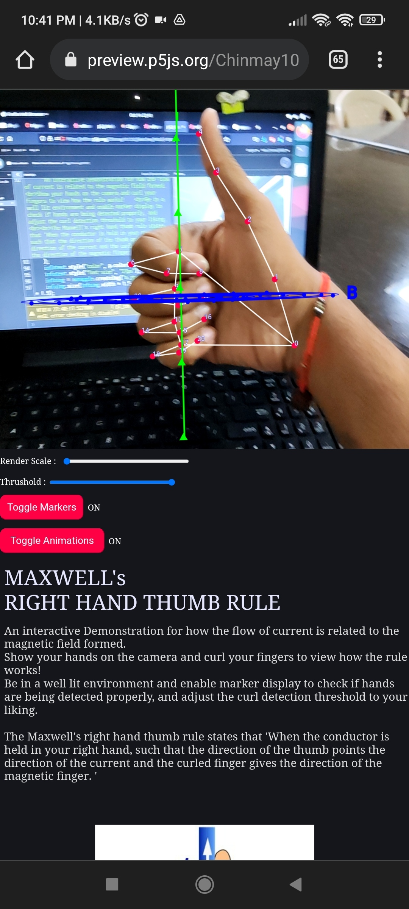

Maxwell's Right Hand Thumb Rule
An interactive Demonstration for how the flow of current is related to the magnetic field formed.
Show your
hands on the camera and curl your fingers to view how the rule works!
Be in a well lit environment and enable
marker display to check if hands are being detected properly, and adjust the curl detection threshold to your
liking.

The Maxwell's right hand thumb rule states that "When the conductor is held in your right hand,
such that the direction of the thumb points the direction of the current and the curled finger gives the direction
of the magnetic finger."
Preview

An AR Demonstration by